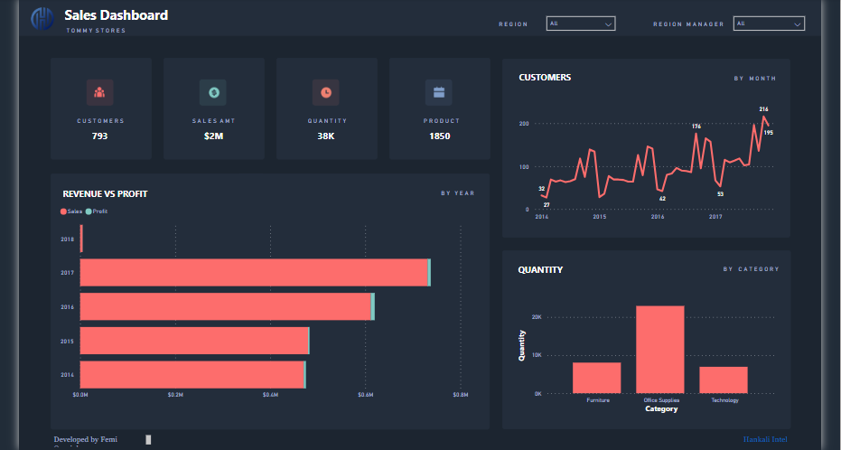

📊 Marketing Segmentation Analysis: Unveiling Insights for Business Growth
Unlock the power of data with our Customer Segmentation Analysis case study! By delving into a bank's customer data, we've leveraged clustering algorithms and Power BI visualization tools to gain valuable insights for strategic decision-making.
Objective: Our aim? To perform clustering and summarize customer segments, enabling businesses to tailor products and marketing strategies effectively.
Key Findings:
Identified customer clusters:
Loyal Customers,
Potential Long-term Customers,
Champions (Power Shoppers),
Inactive or At-risk Customers,
Explored customer interactions and purchasing behaviors across different income levels, family sizes, and demographics.
Discover how our analysis can empower your business to better understand and target your ideal customers, driving growth and success.

Credit Card Customer ML Project
AllLife Bank wants to focus on its credit card customer base in the next financial year.
They have been advised by their marketing research team, that the penetration in the market can be improved. Based on this input, the Marketing team proposes to run personalized campaigns to target new customers as well as upsell to existing customers.
Another insight from the market research was that the customers perceive the support services of the bank poorly. Based on this, the Operations team wants to upgrade the service delivery model, to ensure that customers queries are resolved faster. The Head of Marketing and Head of Delivery both decide to reach out to the Data Science team for help.
The Objective of the project is to Identify different segments in the existing customer based on their spending patterns as well as past interaction with the bank.
🚀📊 Unlocking Insights into Nigeria's Tech Job Market: A Data-driven Journey
In collaboration with the training arm of VIVIDX, our diverse team embarked on an ambitious endeavor to delve deep into Nigeria's tech job market. Armed with data extraction, transformation, and loading techniques, we sifted through a vast sea of information to uncover the prevailing skills and requirements sought after by major tech companies in Nigeria.
Pizza Sales Data Analysis Using SQL & Power BI

This project involves a deep-dive analysis of a pizza sales dataset involves several steps to gain insights into sales patterns, customer preferences, and other relevant aspects. Skills used: Joins, CTE's, Temp Tables, Windows Functions, Aggregate Functions, Creating Views, Converting Data Types, Data Transformation, Create Relationships and Data Modelling.
Superstore Data Analysis using Google Sheets
This data analysis project in Google Sheets provides valuable insights into the superstore's sales performance over the course of 4 years, helping the business make informed decisions to improve its operations, increase profitability, and enhance customer satisfaction. In this data analysis project, I will conduct an Exploratory Data Analysis (EDA) on a superstore sales dataset. The dataset contains information about sales transactions, customer details, product categories, and regional sales performance. The goal of this project is to gain insights into the sales trends, customer behavior, managerial operations and other key aspects of the superstore's operations.
Accident Data Analysis using SQLite3 in Python
The project revolves around leveraging real-world data from road traffic accidents in Great Britain, specifically focusing on the data from the year 2020. The primary objective is to provide valuable insights and recommendations to government agencies for enhancing road safety. Utilizing SQLite3, a relational database management system, to extract and manipulate the data. Other tasks like Data cleaning, Data Modelling and Further analysis were carried out.
Superstore Data Analysis using Power BI

For this project, we will use POWER BI as the primary tool for data analysis and visualization. Power-BI provides a user-friendly interface and a variety of built-in functions and visualization options for data analysis.
HR DATA ANALYSIS - SQL SERVER 2022 / POWER BI

This project dives deep into the realm of data analysis using SQL and Power BI to uncover important human resource insights that can greatly benefit the company. Featuring eye-catching dashboards offer crucial HR metrics like employee turnover, diversity, recruitment efficacy and performance evaluations. These help HR professionals make informed decisions and strategic workforce planning. Intricate ETL process was carried out using MYSQL 2022 involving data cleaning and exploratory data analysis
BIKE SALES DATA ANALYSIS USING MICROSOFT EXCEL

This project involves a deep-dive analysis into the bike sales dataset involves several steps to gain insights into sales patterns, customer preferences, and other relevant aspects. The dataset contains the following columns: Customer ID: Unique Identity Number for each customer